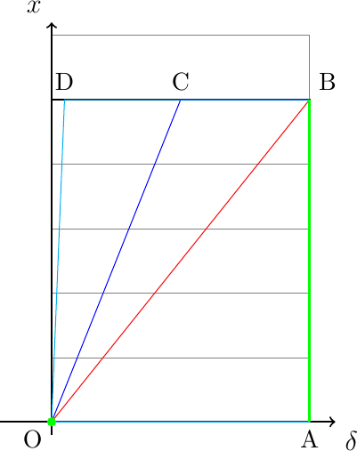
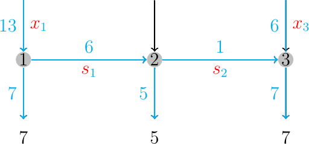
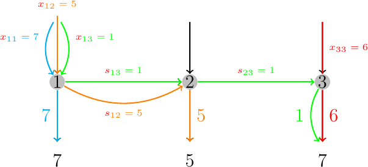
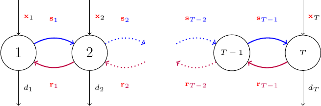
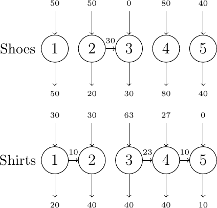

\(\newcommand{\R}{{\mathbb{R}}}\) \(\newcommand{\Z}{{\mathbb{Z}}}\) \(\newcommand{\N}{{\mathbb{N}}}\) \(\newcommand{\var}[1]{{\color{red}{\mathbf{#1}}}}\) \(\newcommand{\param}[1]{{\color{blue}{#1}}}\) \(\newcommand{\mathsc}[1]{{\normalfont\textsc{#1}}}\) \(\def\sc#1{\dosc#1\csod}\) \(\def\dosc#1#2\csod{{\rm{#1{\rm\small #2}}}}\) \(\newcommand{\set}[1]{{\sc#1}}\) \(\newcommand{\mathvar}[1]{\var{#1}}\) \(\newcommand{\half}{{\small{\frac{1}{2}}}}\)
17. Structured Mixed Integer Linear Optimization Models¶
17.1. The fixed charge problem¶
In some applications although it is reasonable to assume the cost is linear there might arise a problem of modeling a discontinuity at zero. Consider, as an example, a production problem, like that already presented in chapter Structured linear optimization models.
Production of a particular finished product, sometimes, involves a cost which is proportional to the quantity to be produced; this is often associated to labor time or to the time spent consuming some of the available resources. But sometimes a “fixed charge” is paid at the very start of production. This cost is a constant which needs to be paid only if the production level is strictly positive. As an example, often a machine needs some start-up or set-up time before being ready to produce. This time, which is non productive, can be associated to a cost, which needs to be paid independently on the quantity to be produced, provided that this quantity is non zero. Examples might be warming up a plant, staff training, or equipment or tool change in a machine. We can formally describe the contribution to the total cost due to the decision to produce \(\var{x}\) units of a given product as
This function, if the fixed cost \(K\) is non zero, is not a1 although it can be proven to be concave.

Through the introduction of an auxiliary binary variable it possible to correctly formulate such a cost function. Taking into consideration the modeling examples introduced in chapter Using binary variables in logical constraints a binary variable \(\mathvar{\delta}\) is introduced and the following is required:
Here \(M\) is a sufficiently large constant, e.g., an upper bound on the production quantity. This way we have formulated, in a linear way, the logical constraint
Thus the indicator variable \(\mathvar{\delta}\) is forced to 1 when the event \(\var{x}> 0\). This binary variable might then be used in the objective function to switch on the fixed charge:
It is worth observing that this model is not “perfect”: in fact, while the constraints correctly implement the logical constraint, they are not enough to guarantee that if \(\var{x}_j = 0\) then the corresponding \(\mathvar{\delta}_j = 0\). Thus, in this model it is possible to obtain feasible solutions in which although there is no production for a certain product, nonetheless a fixed charge is included (\(\var{x}_j = 0, \mathvar{\delta}_j = 1\)).
This modeling error is irrelevant in this application. In fact, even if it is true that there can exist feasible solutions with zero production and not null fixed charge, thanks to the minimization of the objective function, these solutions will be discarded in favor of similar, cheaper, solutions with zero fixed charge. In other words, although the feasible set is larger then the feasible set of the original problem, the optimal solutions will be correct, thanks to the positivity of the fixed charge.
In some cases, however, the role of the indicator variable in the model might be more complex; it might be involved in different constraints and it might not automatically be driven to zero when production is null.
In these cases, an exact formulation of the fixed charge model would be necessary and an additional logical constraint would be required:
As we have already seen, this logical constraint cannot be exactly translated by means of a finite number of linear constraints. A solution, which is only partially satisfactory, consists in transforming the constraint \(\var{x}> 0\) into \(\var{x} \geq \varepsilon\), where \(\epsilon> 0\) is a small enough constant.
In this case it is possible to introduce a constraint that represents the logical implication
Choosing the upper bound \(M\) requires some additional attention. From a purely logical point of view, this constant plays the role of \(+ \infty\); it is, in other words, a value large enough to make the constraint \(\var{x} \leq M\) redundant. From the computational point of view the choice of this constant might have an influence on the effective possibility of solving large scale problems in acceptable computational times. It is important to choose the value of the constant \(M\) in such a way that, although it should be large enough not to limit in any way feasible solutions, it must nonetheless be the lowest possible in order not to generate too weak a relaxation. In fact, consider a simple example. Assume that in a fixed charge problem a production variable \(\var{x}\) has an upper bound equal to, say, 5. Then each of the following logical constraints:
when coupled with \(0 \leq \var{x} \leq 5, \mathvar{\delta} \in \{0,1\}\) produce exactly the same set of feasible solutions. However, when relaxing the integrality requirement on the binary variable the resulting polyhedra are different and, in particular, the first one is stronger, then the second, which is stronger than the third.

In the figure, the feasible set is represented in green and it consists of the origin O and the segment (A,B); the relaxed polyhedra associated to the three formulations above are, respectively, thos with vertices (O,A,B), (O,A,B,C), (O,A,B,D). (O,A,B) is ideal, as it is the smallest possible polyhedron including the feasible set. On the contrary, the other two polyhedra contain vertices which are not feasible.
17.2. Lot sizing models¶
An immediate application of the fixed charge model can be found in production planning. The lot sizing problem consists in deciding production levels (lot sizes) in order to be able to satisfy a known external demand, taking into account capacity and costs. The most basic lot sizing model is the following:
where (in the following, \(t\) always denotes a time period within the time horizon):
\(T\) is the (finite) time horizon, i.e., the planning period
\(\var{x}_t\) is the production level at the beginning of time period \(t\)
\(\var{s}_t\) is the inventory level at the end of the period
\(\mathvar{\delta}_t\) is the fixed charge binary variable for the period, used to add a fixed cost whenever the production in a time period is different from zero
\(\param{d}_t\) is the (known or estimated) demand for the period
\(\param{p}_t,\param{q}_t, \param{h}_t\) are, respectively, the unit production cost, the fixed charge, the unit inventory cost
\(\param{M}_t\) is the upper bound required in order to correctly formulate the fixed charge logical constraint at each period.
Classical lot sizing models are usually analyzed depending on a major assumption. In many cases the problems are assumed to be uncapacitated. By this we mean the fact that there is no strict limit on production capacity in any period, and, similarly, there are no constraints on inventories. The assumption of no limits on the production capacity might seem to be contradictory with respect to the inclusion, in the model, of an upper bound on production, which is necessary in order to correctly formulate the logical constraint. However, this upper bound, in uncapacitated models, is defined as
This assumption derives from cost considerations: there is in fact no need to produce, at any time period, more than what will be demanded in the current and future periods. Any extra production, beyond this limit, would not be used to satisfy demand and will generate an additional cost. So, by using this parameter as an upper bound on production levels, a redundant constraint is generated. To be precise, the upper bound is redundant for any optimal solution. Using a similar upper bound does not really limit production: at any time period it is assumed that production can be set to any reasonable level, without any strict limitation. It can be easily seen that, thanks to this upper bound, also the inventory is limited. But, again, this is not a limited capacity constraint on the inventory, but simply a consequence of the assumption on the model.
From a purely modeling point of view, including an upper bound on production or on the inventory would be quite trivial. However it must be observed that the lot-sizing optimization problem is easy to solve in the uncapacitated case, while it becomes, in general, hard as soon as strict bounds on production or inventory levels are introduced.
We are not going to go into much detail on the algorithmic aspects of lot-sizing. It seems worth recalling, however, that the uncapacitated case remains easily solvable even when the objective function is concave in terms of production and inventory levels.
We recall concave functions are frequently encountered as cost functions in applied problems. Let us first give some definitions. A set \(S \subseteq \R^n\) is called convex if
A convex set is any set characterized by the fact that given any two elements in the set, also the segment connecting them belongs to the set. A convex function over a convex set \(S\) is a function such that:
while a concave function is any function such that
It can be easily seen that for concave functions (here we limit to functions of a single variable, but a more general result might be stated) the following holds:
and this means that the increment in the function is not increasing with its argument. This situation is very common in industrial cost functions where there usually is some sort of a scale effect which makes production, or inventory, display a marginal cost variation which is non increasing with the quantity. It is some sort of a quantity discount: one additional unit produced will marginally cost less as the production level increases.
It is easy to proof that the fixed charge objective function is indeed a concave function over the set of non negative reals.
A well known result in lot sizing theory is that, provided that the problem is uncapacitated, if the objective function is a concave function of the inventory and the production levels, then the optimal production policy can be efficiently found (i.e., in polynomial time). We suggest the interested reader to consult the fundamental book [21] on this subject. Here it might suffice to say that there exist many efficient algorithms to optimally solve the uncapacitated lot sizing problem, the best known of which is the Wagner-Within algorithm, which is based on dynamic programming.
It is also important to observe that the problem is “easy” and can be efficiently solved for long time horizons even in a much more general form than the linear one considered here. However, the formulation given above is far from being ideal and, in general, solving a problem of realistic size using that model with a general purpose mixed integer linear optimization solver might be extremely demanding. We cannot here go into details on strong formulations for this problem. It is sufficient so say that a strong (ideal) formulation of the uncapacitated lot sizing problem can indeed be obtained. However, its formulation requires an exponential number of constraints. Thus, the direct use of such a formulation for a large scale problem is out of question. However, it is possible to define a computational procedure which can be recursively called to add a small number of constraints to the original formulation until the optimal solution is found.
17.2.1. Branch and cut - dynamical simplex method¶
This kind of procedure is quite common in combinatorial optimization and it is worth devoting a paragraph to a quick description. Assume a formulation of a problem is given in which constraints are partitioned into a set of “easy” constraints, quite limited in number, and another set of constraints, usually of huge cardinality.
Let us denote these two sets by \(F_0, F\):
Usually, even if not necessarily, integrality requirements for a subset of variables might be present. The idea of the dynamical simplex method, or the Branch and Cut algorithm, is to start by solving a relaxation of the problem (possibly a good one) obtained by eliminating the large family of constraints with index in \(F\) (and, possibly, the integrality requirement too).
This solution of this problem might be a feasible solution or not. If it is feasible, i.e., if it satisfies also all of the constraints which have been eliminated, than it is an optimal solution to the original problem. Otherwise, there must exist at least an inequality, in family \(F\), which is not satisfied by the current solution.
Assume we have available a procedure, called a separation procedure which, given a point \(\bar{x}\), either
certifies that \(\bar{x}\) satisfies all of the inequalities indexed by \(F\)
or returns at least an index \(\bar{\imath} \in F\) such that
\begin{align*} \alpha_{\bar{\imath}}^T \bar{x} & > \beta_{\bar{\imath}} \end{align*}(and possibly returns many of these indices and, if at all possible, some of those associated to the “maximally violated” inequalities)
Let us denote this procedure by \(CutGenerator(x,F_2)\) and assume it returns a set of indices of violated inequalities, if any exists, or if all are satisfied, it returns the empty set.
Thus a cutting plane algorithm might be built this way:
let, as before, \(x_0^\star\) be an optimal solution of the intial relaxed problem
let \(k:= 0\)
let \(F_1 = \emptyset\)
While \(C = CutGenerator(x_k^\star,F)\) is not empty:
let \(k := k+1\)
let \(F_1 = F_1 \cup C\)
let \(F = F \setminus C\)
solve:
\begin{align*} x^\star_k & \in \arg \min c^T \var{x} \\ a_i^T \var{x} & \leq b_i & i \in F_0 \\ \alpha_i^T \var{x} & \leq \beta_i & i \in F_1 \end{align*}
End While
In the above algorithmic scheme, the CutGeneration procedure is repeatedly called to separate the current solution. In fact, all of the inequalities returned by this procedure are violated in the current optimal solution. Thus, adding these inequalities to the pool of current inequalities, will make that solution infeasible. Thus the procedure, ate every iteration, is granted to deliver a different solution to the current relaxation. It is hoped, and this is what happens in practice, that the whole algorithm will terminate well before all of the inequalities of the original set \(F\) have been added.
This has become the standard way to approach difficult combinatorial optimization problems. What is needed is, from one side, a family of valid inequalities, possibly describing the ideal formulation of the problem or, at least, a subset of the inequalities defining such ideal representation. This is clearly a modeling problem. From the algorithmic point of view, it is necessary to have available a CutGeneration procedure which avoids checking, one by one, all of the inequalities in search of a violated one or of a proof of feasibility. This, sometimes, can be done efficiently, while in some other cases we must be satisfied by an heuristic CutGeneration procedure, one which is not granted to find a violated inequality even if one exists. An important result in computational complexity theory states that an efficient separation procedure exists if and only if an efficient optimization algorithm exists for the original problem. In other words, if a problem is efficiently solvable, as it is the case of the uncapacitated lot-sizing with linear costs and fixed charge, then there should exist a formulation and an efficient cut generation algorithm to solve it through the repeated execution of linear optimization algorithms.
On the opposite side, if a problem is inherently difficult, as it is the case, in general, for finite capacity production planning problems, even if the ideal formulation might be known, finding a violated inequality or checking they are all satisfied is in general hard.
This negative result should not however be too much emphasized. Modern exact optimization procedures do in fact use this kind of strategies, in order to solve specific instances of hard problems. These are worst-case results, and they do not prevent single problems to be solved quite efficiently by using a similar scheme.
This framework is also a justification for presenting linear integer models for problems, like the lot sizing, for which efficient algorithms do exist which are somewhat unrelated to linear optimization.
The reason is the following: if we just needed to solve an uncapacitaed lot sizing problem, it is quite out of question that the best choice would be to use the Wagner-Within algorithm, or some other, even more efficient, methods available. However, when trying to solve more general lot-sizing problems, knowing a set of good quality inequalities as well as a procedure to separate an infeasible solution might prove extremely important in the solution of realistic large size problems.
17.2.2. Advanced formulations for the lot sizing model¶
It is not the case to present here the ideal formulation of the lot sizing model, for which we refer to the relevant literature on the subject. Introducing this formulation, in fact, would require us to make a quite long digression on valid inequalities for the problem, which seems to be out of scope in this notes, mainly devoted to modeling issues. Another reason for not introducing this formulation is the fact that, as a consequence of the exponential number of its constraints, it cannot be used as-is in a model, but included in a specialized algorithmic procedure of the kind briefly described above.
It might be worth, however, to introduce a different model for the problem which is indeed ideal and not too large in dimension. The model is based on a multicommodity flow formulation. When a decision on a production level is taken at a specific time instant, we might follow the material flow from production up to demand consumption. This flow usually will be split into some flow of production going directly to satisfy part of the current demand, and a set of flows that, passing through a few periods in the inventory, will eventually contribute to partially satisfy future demand. The idea if the multicommodity flow formulation is to make these flows explicit. We label each production and each inventory variable with two indices: the current time period, and the time period at which the material will be delivered to satisfy the demand. Thus, e.g., \(\var{x}_{3,5}\) represents production in period 3 which will be used to satisfy (part of) the demand of period 5; \(\var{s}_{2,6}\) is the quantity of material in the inventory at the end of period 2 which will be used to satisfy (part of) the demand of period 6.
The following illustration might be useful to understand the formulation. Consider the following feasible flow in a 3 period planning problem:

Here, 13 units are produced at time 1, some which to satisfy the demand of period 1, some for period 2 and 1 with destination the demand of period 3. Another production run is in period 3, in which 6 units are produced to satisfy, with the inventory left over from previous periods, the demand of period 3. If we split the single origin/destination flows, we obtain:

Denoting by \(d_{s,t} = \sum_{p=s}^t \param{d}_s\) the cumulative demand between periods \(s\) \(t\),the model can be written as:
The model follows quite closely the standard one, and the link between the two is obtained by considering the relations
In the above model it is assumed that the initial inventory is 0; in any case, if the initial inventory is no more than \(\param{d}_1\) it can be reduced to zero, partially compensating the initial demand. Under the assumption of zero initial inventory, it is also required to add some border constraints on the inventory variables associated to the initial period:
and the following one for the impossibility of having a storage “going back on time” (recall that we used to define the storage at the end of the period):
In the model above, the objective is quite immediately recognized as perfectly equivalent to the original one. The first group of constraints represents the flow of inventories inside the network, before their exit as partial demand satisfaction. Those constraint state that the inventory flow of products whose destination is a future demand either comes from current production or from the previous period, all with the same destination in the future. The second group of constraint is associated to demand satisfaction, and it states that all of the demand of a period needs to be satisfied with the current production destined to current demand, or with the products stored in the inventory and destined to satisfy current demand. No inventory can be left over at this stage.
The following constraint is a set of logical constraints imposing that at any time period, if there is a non null production, whichever the destination, then the logical variable of that time period needs to be set to 1. This variable is then used to add the fixed charge cost to the objective.
This multi commodity formulation has a larger number of variables and constraints: \(O(T^2)\) instead of \(O(T)\) of the original formulation. However, it can be proven that this formulation is ideal: relaxing the integrality constraints on the logical variables, every (optimal) basic feasible solution satisfies also the binary constraints. Thus it is possible to solve to optimality this problem with a single execution of a linear optimization algorithm like, e.g., the simplex method. It is worth recalling that, if our aim was to solve an instance of this problem, even this ideal formulation might not be a good choice, in particular for large time horizons. In fact efficient specialized algorithms exist which allow for a very fast solution even at large size. However, when there are complicating constraints, like, e.g., finite capacity or additional logical constraints, it might be useful to add those constraints to a good formulation, like this one, and to start from this for a branch and bound algorithm. We recall again, however, that it is possible to obtain an ideal representation of the problem in the original variable space, without the necessity of squaring the number of variables and constraints.
The following code contains an example of implementation of the original lot sizing model:
param T;
param p{1..T};
param q{1..T};
param h{1..T};
param s0;
param d{1..T};
param MaxProd;
var x{1..T} >=0;
var s{0..T} >=0;
var delta{1..T} binary;
minimize cost: sum{t in 1..T} (p[t]*x[t] + q[t]*delta[t] + h[t]*s[t]);
s.t. balance{t in 1..T}:
s[t-1] + x[t] = d[t] + s[t];
s.t. fix0: s[0] = s0;
s.t. logical{t in 1..T}:
x[t] <= delta[t] * min(MaxProd,sum{k in t..T} d[k]);
# to be done
while the following one is an implementation using the multicommodity flow formulation (notice we have not imposed integrality on the logical variables):
param T;
param p{1..T};
param q{1..T};
param h{1..T};
param s0;
param d{1..T};
param MaxProd; # used for finit capacity
var x{t in 1..T,u in t..T} >=0;
var s{t in 0..T-1, s in t+1..T} >=0;
var delta{1..T} >=0, <=1;
minimize cost: sum{i in 1..T} (
sum{t in i..T} p[t]*x[i,t] +
sum{t in i+1..T} h[t]*s[i,t] +
q[i]*delta[i] );
s.t. balance{i in 1..T, t in i..T}:
s[i-1,t] + x[i,t] =
(if (i==t) then 0 else s[i,t]) +
(if (i==t) then d[t] else 0);
s.t. fix0: s[0,1] = s0;
s.t. fixT{t in 2..T}: s[0,t] = 0;
s.t. logical{i in 1..T, t in i..T}:
x[i,t] <= delta[i] *
if t == 1 then d[1] - s0
else d[t];
s.t. MaxCap{i in 1..T}: sum{t in i..T} x[i,t] <= MaxProd;
# to be done
If we run both models with the following data:
param T := 52;
param MaxProd := Infinity;
param: p q h :=
1 100 5000 5
2 100 5000 5
3 100 5000 5
4 100 5000 5
5 100 5000 5
6 100 5000 5
7 100 5000 5
8 100 5000 5
9 100 5000 5
10 100 5000 5
11 100 5000 5
12 100 5000 5
13 100 5000 5
14 100 5000 5
15 100 5000 5
16 100 5000 5
17 100 5000 5
18 100 5000 5
19 100 5000 5
20 100 5000 5
21 100 5000 5
22 100 5000 5
23 100 5000 5
24 100 5000 5
25 100 5000 5
26 100 5000 5
27 100 5000 5
28 100 5000 5
29 100 5000 5
30 100 5000 5
31 100 5000 5
32 100 5000 5
33 100 5000 5
34 100 5000 5
35 100 5000 5
36 100 5000 5
37 100 5000 5
38 100 5000 5
39 100 5000 5
40 100 5000 5
41 100 5000 5
42 100 5000 5
43 100 5000 5
44 100 5000 5
45 100 5000 5
46 100 5000 5
47 100 5000 5
48 100 5000 5
49 100 5000 5
50 100 5000 5
51 100 5000 5
52 100 5000 5
;
param s0 := 0;
param d :=
1 400
2 400
3 800
4 800
5 1200
6 1200
7 1200
8 1200
9 1300
10 1300
11 300
12 1500
13 200
14 100
15 500
16 500
17 900
18 800
19 400
20 1200
21 1500
22 1200
23 900
24 1100
25 200
26 1200
27 600
28 400
29 300
30 100
31 1300
32 500
33 1600
34 800
35 1600
36 900
37 1100
38 400
39 500
40 100
41 900
42 1000
43 1500
44 1300
45 500
46 1400
47 200
48 1400
49 800
50 1400
51 700
52 400
;
# to be done
the first model returns:
Gurobi 9.1.1: optimal solution; objective 4603000
230 simplex iterations
1 branch-and-cut nodes
plus 122 simplex iterations for intbasis
display x,s,d;
: x s d :=
0 . 0 .
1 800 400 400
2 0 0 400
3 1600 800 800
4 0 0 800
5 1200 0 1200
6 1200 0 1200
7 1200 0 1200
8 1200 0 1200
9 1300 0 1300
10 1600 300 1300
11 0 0 300
12 1800 300 1500
13 0 100 200
14 0 0 100
15 1000 500 500
16 0 0 500
17 900 0 900
18 1200 400 800
19 0 0 400
20 1200 0 1200
21 1500 0 1500
22 2100 900 1200
23 0 0 900
24 1300 200 1100
25 0 0 200
26 1800 600 1200
27 0 0 600
28 800 400 400
29 0 100 300
30 0 0 100
31 1800 500 1300
32 0 0 500
33 2400 800 1600
34 0 0 800
35 2500 900 1600
36 0 0 900
37 1500 400 1100
38 0 0 400
39 600 100 500
40 0 0 100
41 900 0 900
42 1000 0 1000
43 1500 0 1500
44 1800 500 1300
45 0 0 500
46 1600 200 1400
47 0 0 200
48 2200 800 1400
49 0 0 800
50 1400 0 1400
51 1100 400 700
52 0 0 400
;
while the multicommodity flow based one:
Gurobi 9.1.1: optimal solution; objective 4603000
110 simplex iterations
It must be said that modern solvers employ a large set of preprocessing techniques in order to strengthen the initial formulation and transform it into one which is as close as reasonably possible to the ideal one. This is why, employing a state-of-the-art solver like, in this case, Gurobi, the difference between the two is not striking. However we can observe that with the original formulation a step of branch and bound is required, while with the second one the simplex method is enough. The number of simplex iterations in the second run is much lower than the analogous one in the first. It must be said, however, that the first formulation has a much smaller number of variables and constraints, so the real winner in this case is not so evident. If we tried an older solver like, e.g., glpsol, then the difference in the two runs would have been very large.
17.2.3. Variants of production planning models¶
In this part we would like to briefly list some additional modeling possibilities and some extensions of the basic model, useful in realistic production scenarios. First some extensions to the basic model will be given. Later the model will be extended in a significant way to deal with large scale production planning cases. It should be reminded, in all this part, that all of what follows is based on the models just described. Thus any improvement on the formulation of the basic model might have a positive impact and improve the corresponding formulation of advanced models. It was out of scope here to describe the valid inequalities which define the ideal polytope for the uncapacitated lot sizing model. Those inequalities might very well be added, in a dynamic way, to the formulations we will give here in order to lower the computational cost of solving these more advanced and complex models.
Backlogs
The first modeling variant we introduce is that related to allowing for part of the demand not to be satisfied in the period it was requested. It is possible, sometimes, to delay the delivery of part of the demand; of course, any delay will involve an additional cost. In order to model this situation, it is possible to consider the fact that this is quite symmetrical to the situation of the inventory. In the case of inventory, in fact, we are producing in advance with respect to the demand period; and the earlier we produce, the higer the cost will be. This is modeled through an inventory variable, with a cost, which models the flow of produced material “towards the future”. In a completely analogous way, backlog (which is the delayed delivery of products) can be thought of as an inventory which, from future production periods, flows “back” towards the satisfaction of a past demand. Every unit in this backward flow will have an associated backlog cost. Of course, products never travel back in time, but a backlog can be used to model production delayed by a few periods. A model with backlog is the following:
\begin{align*} \min & \sum_{t=1}^T (\param{p}_t \var{x}_t + \param{q}_t \mathvar{\delta}_t + \param{h}_t \var{s}_t + \param{b}_t \var{r}_t) \\ \var{s}_{t-1} + \var{x}_t + \var{r}_t& = \param{d}_t + \var{s}_t + \var{r}_{t-1}& \forall\, &t\\ \var{s}_0 = \var{s}_T & = 0 \\ \var{x}_t & \leq M_t \mathvar{\delta}_t & \forall\, &t\\ \mathvar{\delta}_t & \in \{0,1\} \\ \var{x}_t, \var{s}_t, \var{r}_t & \geq 0 \end{align*}Here we have included a new variable, \(\var{r}_t\) to represent the quantity of material produced after period \(t\) which is available either to satisfy the current demand or to go backward in time to satisfy previous demand.
The following schematic representation should help understanding the balance equations:

The backward arcs in the picture represent the flow of material produced after the demand period. It is in general assumed that on the borders of the planning periods, the backlog variable is zero.
This model, similarly to the standard one, can be very easily solved when there is no strict constraint on finite capacities. Also for this model there exist alternative formulations, either in a larger dimensional space, similar to what has been introduced in the multicommodity formulation above, or in the same space of variables, but with an ideal formulation with an exponential number of constraints.
Startup cost
We have already seen how to model a setup cost which is to be paid whenever production is positive. A startup cost is different in that it is a cost to be paid whenever production is positive after a null production period. Startup cost, in other words, is paid whenever production changes its state from zero to positive. It is quite common in plants with continuous production and represents a cost to be paid in order to take the production plant from a quiet state to a ready state. On the contrary, setup costs can be thought of as similar costs, but for a plant which is always switched off at the end of the period, so that it needs to be paid at every production period. It is the case, as an example, of production plants working for 8 hours a day, which, every morning, need to be set up in order to be able to start production.
A possibility to model startup costs is to introduce an additional binary variable, \(\var{z}_t\) and to link it in such a way as to represent this change of state:
\begin{align*} \mathvar{\delta}_{t-1}=0 \land \mathvar{\delta}_{t}=1 & \implies \var{z_t} = 1 \end{align*}This is equivalent to the logical expression:
\begin{align*} \mathvar{\delta}_{t-1}=1 \lor \mathvar{\delta}_{t}=0 \lor \implies \var{z_t} = 1 \end{align*}which cab be formulated as the constraint
\begin{align*} (1-\mathvar{\delta}_{t-1}) + \mathvar{\delta}_{t} + \var{z_t} & \geq 1 \end{align*}or, simplifying,
\begin{align*} \var{z_t} & \geq \mathvar{\delta}_{t-1} - \mathvar{\delta}_{t} \end{align*}The opposite implication \(\var{z_t} = 1 \implies \mathvar{\delta}_{t-1}=0 \land \mathvar{\delta}_{t}=1\) is not in general required, as the cost associated to the startup variable will forbid \(\var{z}_t\) to be 1 if there is no startup situation.
It might also be observed that, here, we used \(\mathvar{\delta}_t=0\) as an indicator that in that period production is zero. But, we recall, in the original lot sizing model this implication was not imposed, as it was automatically true in optimal solutions, due to a similar reasoning as above: it is costly to set the variable to 1 when it is not necessary. In this case, however, some care needs to be taken, as we should consider whether it is still true that there is no incentive, in optimal solutions, to have \(\mathvar{\delta}_t=1\) even when production is zero. And, indeed, now this might happen, in particular when the startup cost is significantly high. It might be convenient to set this variable to 1 just to avoid paying a startup cost. This is incorrect and, in this model, we need to add the requirement:
\begin{align*} \var{x}_t = 0 & \implies \mathvar{\delta}_t = 0 \end{align*}which can be approximately formulated as
\begin{align*} \var{x}_t &\geq \varepsilon \mathvar{\delta}_t \end{align*}Startup time
Another quite frequent effect of startup is that, not only a cost is incurred, but also production capacity is reduced, due to the time spent in starting the engine. We report here the example for startup, because for setup the situation is easier. In fact, if, say, one hour of production is lost for setup, we can simply change the capacity of the production plant, reducing it to take into account this one hour loss. With startup the situation is different, as production capacity will be full for every period, except for those periods which immediately follow a change of state.
But, assuming the startup cost model has been included, so that we can use variable \(\var{z}_t\) to indicate startup periods. If Production capacity is denoted by \(\param{C}_t\) and the loss of proiduction capacity due to startup is denoted by \(\param{ST}_t\), then the logical constraint linking binary variables to production can be written as
\begin{align*} \var{x}_t & \leq \param{C}_t \mathvar{\delta}_t - \param{ST}_t \var{z}_t \end{align*}This way, when startup occurs, the upper bound on production is reduced accordingly.
Minimum production levels
In some production planning cases, when production is active, a minimum production level might be imposed. Take into account that, usually, an effect of the presence of setup costs is the fact that when production is active, production levels are non negligible, to compensate for the setup cost. If, nonetheless, a minimum production level \(\param{LB}_t\) is required, this can be easily introduced through a linear inequality:
\begin{align*} \var{x}_t & \geq \param{LB}_t \mathvar{\delta}_t \end{align*}By the way, when present, this lower bound can take the place of the \(\varepsilon\) parameter we had to introduce to model some of the logical constraints in previous sections. If we put together the setup and minimum level requirements, the constraint turns out to be:
\begin{align*} \param{LB}_t \mathvar{\delta}_t & \leq \var{x}_t \leq \param{C}_t \mathvar{\delta}_t \end{align*}from which it is immediately seen that either the production is zero or otherwise it is within the interval \([\param{LB}_t, \param{C}_t]\)
Safety stock
A similar lower bound is frequently imposed on inventories too, in order to protect from uncertainties (in the demand, in the production, …). The difference is that usually a safety stock is always required, and does not depend on other events or binary variables. It can thus be trivially imposed via
\begin{align*} \var{s}_t & \geq \param{SS}_t \end{align*}Unsatisfied demand.
We have always assumed demand as a quantity to be delivered exactly, possibly with some delay, as we have seen before. However, we might as well turn the balance constraint into a “soft” one by allowing the demand not to be exactly satisfied. Of course this will imply a penalty in the objective function. The standard way to soften an equality can be used to obtain equations like the following one:
\begin{align*} \var{s}_{t-1} + \var{x}_t & = \param{d}_t + \var{s}_t - \var{y}_t \\ \var{y}_t & \geq 0 \end{align*}The non negative variable \(\var{y}_t\) subtracted on the right hand side represents the quantity of available product which is not used to satisfy the demand or to feed the inventory. If, as it is required, a positive cost is imposed on this variable in the objective function, then, if at all possible, demand will be always satisfied and this variable will be left equal to zero. Otherwise, either for cost considerations, or in order to cope with limited production capacity in this and earlier periods, it might be convenient to use this variable, paying a cost, and avoid full demand satisfaction. Of course, an upper bound might be imposed to this variable in order to avoid too large a fraction of the demand not to be satisfied.
17.3. Advanced lot sizing models¶
We will not go too much into details, in this chapter, on generalized lot sizing models. But we would like to introduce at least a few formulation of realistic production situations. In fact, real production planning problems require us to take into account many different aspects, from the multiplicity of products, to the different production phases, to the availability of resources. In this part we will define a few such models, in order to show the power of linear constraints to model even very complex realistic situations. Of course, modeling is not solving, and the computational aspects behind the possibility of actually solving these models are complex and out of scope in this volume. In any case we would like to recall that, from one side modeling the whole production planning problem as a single model might be extremely beneficial, from a cost point of view; typical practical approaches in this field proceed by decomposing the problem in sub-problems, easier to solve, but whose interactions are neglected. This usually leads to far from optimal solutions, and, thus, inefficiencies. Small scale problems can be solved already from the models we will introduce here, with general purpose mixed integer linear optimization tools. Larger scale problems might require advanced algorithmic implementations, or, possibly, improved formulations.
17.3.1. Master Production Scheduling models¶
MPS (Master production Scheduling) models consist of a quite straightforward generalization of lot sizing to take into account
limited resource availability
multiple products
These are two major extensions of the basic model. From one side, multiple products are considered and their flow throigh the planning period must be managed separately one from the other. It actually is a multicommodity flow problem. Having different products to consider would not be a problem if they were completely independent. On the contrary, dependence among decisions is needed, as, in general, these different product flows need to access some limited resource. These might be shared machines, personnel, prime material, … In what follows we formulate a basic linear model to take into account both multiple products as well as resources. We consider also some resource consumption due to setup.
Let:
\(i=1,\ldots,m\) denote the indices of different products to be planned simultaneously on the same plant
\(k =1, \ldots,K\) denote the set of indices of a set of resources which need to be shared among different products. These resources are not available with infinite capacity, so conflicts arise for their usage, up to capacity
\(\param{L}_t^k\) is the maximum available quantity of resource \(k\) during period \(t\). Depending on the resource consumption of various products, this amount cannot be exceeded during any single time period
\(\param{\alpha}^{ik}\): the amount of resource \(k\) which is necessary in order to produce one unit of product \(i\)
\(\param{\beta}^{ik}\) amount of resource \(k\) required for production setup relative to product \(i\). Here it is assumed that each product type will generate a setup cost when its production is non zero. Different situations might be dealt with in quite a similar way.
Given these parameters, a model might be formulated as follows, where the superscript on variables denotes each product type:
The first equation above is the standard inventory balance equation, the only difference being the fact that it is replicated for each product type: each product has its own production, inventory, demand. The following inequalities are the logical constraints which force the binary variable, for a product in a specific period, to become 1 when the production of that product in that period is non zero. Up to now, there was no linking between the different products: up to here, different products are independent. The following constraints, however, introduce the dependence: at every time period, for each of the resources considered, the total amount of resources consumed cannot be more than the available quantity. Resources are consumed when production is non zero, and the consumption has been assumed to be proportional to the quantity produced, with a proportionality constant which depends on the product type. Moreover, when there is a non zero production, there might be also a fixed consumption of a resource due to setup.
A simple example of implementation, along with a small dataset is reported in what follows:
param T; # time periods
set PROD; # products
param p{1..T,PROD};
param q{1..T,PROD};
param h{1..T,PROD};
param s0{PROD} default 0;
param d{1..T,PROD};
set RESOURCE;
param Avail{1..T,RESOURCE};
param Consume{PROD,RESOURCE};
param Setup{PROD,RESOURCE};
var x{1..T,PROD} >=0;
var s{0..T,PROD} >=0;
var delta{1..T,PROD} binary;
minimize cost: sum{t in 1..T, i in PROD} (p[t,i]*x[t,i] + q[t,i]*delta[t,i]
+ h[t,i]*s[t,i]);
s.t. balance{t in 1..T, i in PROD}:
s[t-1,i] + x[t,i] = d[t,i] + s[t,i];
s.t. fix0{i in PROD}:
s[0,i] = s0[i];
s.t. logical{t in 1..T, i in PROD}:
x[t,i] <= delta[t,i] * sum{k in t..T} d[k,i];
s.t. resource_avail{t in 1..T, k in RESOURCE}:
sum{i in PROD} Consume[i,k] * x[t,i] +
sum{i in PROD} Setup[i,k] * delta[t,i] <= Avail[t,k];
# to be done
param T := 5;
set PROD := Shoes Shirts;
set RESOURCE := Machine Personnel;
param p:
Shoes Shirts:=
1 2 1
2 2 1
3 2 1
4 2 1
5 2 1
;
param q:
Shoes Shirts:=
1 10 10
2 10 10
3 10 10
4 10 10
5 10 10
;
param h:
Shoes Shirts:=
1 .1 .1
2 .1 .1
3 .1 .1
4 .1 .1
5 .1 .1
;
param d:
Shoes Shirts:=
1 50 20
2 20 40
3 30 40
4 80 40
5 40 10;
param Avail:
Machine Personnel:=
1 100 150
2 140 80
3 100 70
4 120 120
5 60 60;
param Consume:
Machine Personnel:=
Shoes 1 1
Shirts 1 1
;
param Setup:
Machine Personnel:=
Shoes 5 0
Shirts 8 0
;
# to be done
Running a mixed integer linear optimization algorithm with these data, the following solution is obtained:

From the picture above it is immediate to see that many properties enjoyed by the standard lot sizing model here are no more valid. In uncapacitated lot sizing it can be proven that at each period either there exist a positive production or a positive inventory, but never both. Here this is no more true. A consequence of the basic property of uncapacitated lot sizing is that production is always equal to the sum of a set of future consecutive demands, which, again, is false in a model like this one.
For what concerns resource consumption, the situation is the following:
from which it can be seen the both the Machine as well as the Personnel resource are in some time periods used at maximum capacity.
17.3.2. Material Requirement Planning¶
The models presented above concern production planning with somewhat monolithic and independent products. By this we mean that the unique interaction among different products is due to the scarcity of some resources, which are needed for different products.
In many situations, however, the situation is highly more complex. Frequently a product is made through an assembling of several intermediate products or parts. Sometimes production proceeds in sequential stages (series production models). In these cases we might think, for each product, to a graph consisting of a single path of successive productions, the final product at one stage being the requested material for the following one:
To cope with this situation, along with the usual balance constraints for each (intermediate and final) product, temporal sequences need to be taken into account, as production at downhill stages cannot be started until the required production uphill has not been completed.
In a more general situation, a final product might be composed of a more complex set of intermediate products. The following picture graphically represents a part assembly production model:

In an even more general situation, the same product or the same intermediate product might be obtained following different production paths, and a choice of th emost convenient one needs to be done. Moreover, each product, either final or intermediate, might need a different quantity of parts from the upper production levels, like we depict in the following figure:

In a complex situation like those described here we may assume that a graph \(G=\langle V,E \rangle\) is available to represent the flow of material and of parts required for the assmebly. Let us denote with \(r^{ij}\) the number of products of type \(i\) required as input to product \(j\). Let \(\gamma^i\) the lead time for the production of one unit of \(i\). This is considered as an integer number of time periods between the start of production and the time by which the part becomes available.
A possibility for the formulation of this model is the following:
This model, again, inherits many of the basic building blocks of previously seen models, with some important variations. In the first set of equations, we can recognize the basic structure of balance equations. However, in the left hand side, the set of “ready” products of type \(i\) can be seen to be composed either of items in the inventory at the end of the previous time period, as usual, plus the quantity of produced items which are available. However, in order to take into account the lead time, i.e., the time between actual production start and the availability of the product, the temporal index is not the actual period, but is shifted backward \(\mathvar{\gamma}_i\) time units. This way we can take into account of the fact that production is not istantaneous, and, in particular, production started in a period does not necessarily leads to a finished product in the same period, ready to satisfy the demand.
On the right hand side, the output side, we have the demand, which is the real, exogenous, demand for that product at that time period; as usual, we have the final inventory too. However, now, there is another important component of the flow out of period \(t\): this is composed of all of the material, ready to ship in this period, which is required as an input in later production stages. The term
corresponds to all of the internal requirement for this product. The sum is extended to all production node in the MRP graph which require parts of type \(i\) for their assembly. The number of parts required is \(\param{r}^{ij}\). This way we model both the satisfaction of external demand, as well as the demand which arises from other production stages within the same plant. The main difference between the two demand types is that while the external demand may be assumed to be known, or at least, estimated, the internal demand is part of the decision process itself, and is linked with all of the other variables of the problem.
Of course, this is a basic building block; it might be extended in several ways, taking, e.g., into account some of the extensions we have seen before. We might have, e.g., some deadlines, which we might model through a backlog, and impose penalties for late delivery. It is important to recall that solving problems like this one, while computationally difficult, might be extremely beneficial in terms of the solution quality.